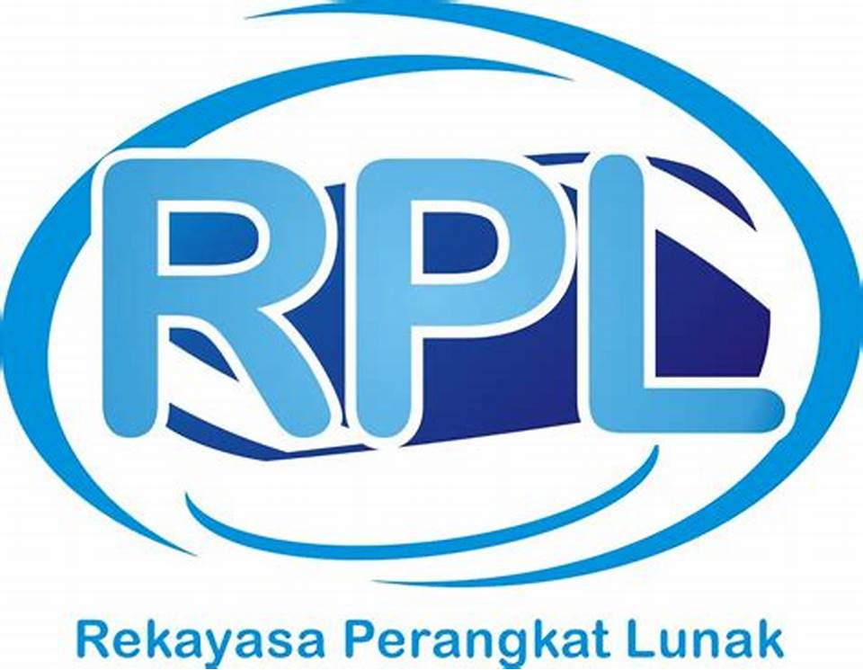

Rekaya Perangkat Lunak
Jurusan Rekayasa Perangkat Lunak diarahkan pada hasil lulusan yang berbudi luhur, berjiwa
entrepreneur dan memiliki kualifikasi sebagai berikut :
1. Kemampuan merancang dan mengelola proyek-proyek perangkat lunak
2. Kemampuan menguasai aspek teknis dan manajemen dari pemanfaatan teknologi informasi
3. Kemampuan mengevaluasi dan menghadapi dampak dari teknologi informasi
4. Kemampuan mempunyai daya inovatif dalam menghasilkan produk/jasa teknologi informasi
5. Kemampuan merancang, mengembangkan, dan mengimplementasikan proyek dalam bidang media digital